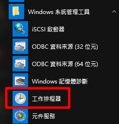

隨著管理機器越來越多，自動化維運勢在必行也開始導入 ansible、slatstack 等自動化工具，為了配合自動化一些批次檔高手也會寫些批次檔輔助，本文章將介紹如何使用工作排程器執行批次檔
本文章使用 windows 10
1. 開始 → windows 系統管理工具 → 工作排程器

第二種方法：控制台 → 系統管理工具 → 工作排程器

2. 左邊列表點選工作排程器程式庫，再點選右邊的建立基本工作

3. 輸入這個排程的名稱跟描述
4. 觸發程序，選取執行時間本文章使要在呼叫時才使用，所以選擇僅一次

5. 選擇僅一次後會有開始時間，因為要在呼叫時開啟所以直接下一步

如果是有選擇有時間規律觸發，會有時間讓你選擇多久執行一次

6. 動作，選擇程序要執行的動作，本文章選擇啟動程式

7. 啟動程式，可以直接輸入指令如圖 shutdown ( 指 shutdown.exe 程式 )，並輸入引數「/s /t 10」，表示要自動關機並停等10秒
本文章已經做好批次檔，所以選擇瀏覽使用做好的批次檔

8. 最後查看有沒有設定錯誤，沒有點選完成

9. 回到排程畫面，會看到排程已列入點擊2下可以再做設定，本文章把此排程設定最高權限執行
10. 使用 cmd 啟動排程，看到成功就是 ok 了
1 | schtasks /Run /TN "排程名稱" |
如果不知道指令如圖 schtasks /? 可以查詢